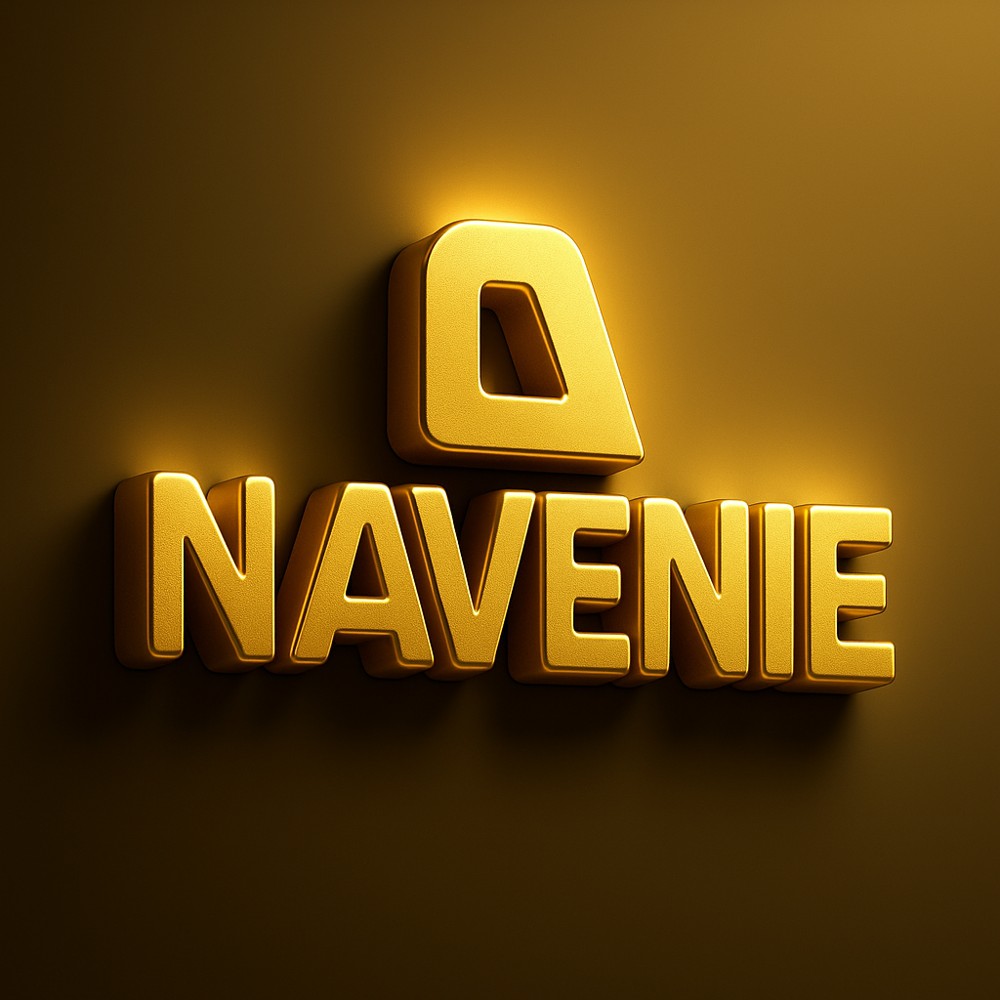

ANGEL NAITBJ, legally known as
Norbert April Igwe Theo Bar-Jehoshua Angel,
is a Nigerian System Engineer, technologist, software and systems developer,
interdisciplinary researcher, philosopher, and spiritual leader whose work spans
science, philosophy, spirituality, engineering, and technology.
He is the Founder and Chief Executive Officer of
NAVENIE™ (Naitbj Angel Ventures Integrated Environments),
an innovation and research-oriented organization dedicated to the development of
engineering systems, technological infrastructures, scientific research,
and interdisciplinary innovation frameworks.
He is also the Founder and President of the
University of Christuneocreatology (UNIC), also known as the
Centre for Christuneocreatology Studies (CCS),
an academic institution structured around the
Christuneocreative Educational System (CES),
which promotes integrated and holistic learning across multiple disciplines.
In addition, he is the Founder and Leader of the
Tabernacle Feast of New Creation in Christ Ministry Inc.,
a ministry framework aligned with his spiritual and theological orientation.
He is formally recognized as a
Christuneocreatologist and
Christuneocreative Philosopher,
through which he advances the philosophical framework known as
CHRISTUNEOCREATOLOGY™.
Christuneocreatology presents an integrative approach to knowledge that unifies
philosophy, spirituality, science, and technology into a structured civilizational model
aimed at ethical innovation, human transformation, balanced development,
and enlightened knowledge systems.
It emphasizes the harmonization of intellectual, technological, and spiritual growth
within modern civilization.
Angel Naitbj is the originator of the
C777® Christuneocreatology System,
a conceptual and philosophical framework that organizes principles of consciousness,
knowledge, intelligence, and civilizational structure into an integrated model.
He teaches that the life of the New Creation is sustained by
DIVINE OR CHRISTUNEOCREATIVE INTELLIGENCE
functioning under the C777® Operating System.
According to his testimony, he divinely received
C777® Christuneocreatology with supernatural hands placed upon him,
as referenced in the Holy Scriptures in Daniel 12 and Revelation 10,
on Mount Mailkunkele during the
Feast of Tabernacles celebration on
27th October 2017.
The event was witnessed and documented by
Evang. Michael Olushola Olorunsogo.
His divine mission centers on unveiling heavenly wisdom,
connecting humanity with the Creator’s purpose,
and guiding people toward transformation, truth, balance,
ethical advancement, and holistic development.
Professionally, Angel Naitbj is actively involved in
software engineering, systems development, digital infrastructure design,
and technological innovation.
His work bridges theoretical research with applied engineering and technological systems,
particularly in the areas of systems architecture,
knowledge engineering, digital innovation,
philosophy of science, philosophy of technology,
systems theory, and interdisciplinary integration.
His academic qualifications include:
• Senior Secondary Certificate (SSC) in Science
• National Diploma (ND) in Electrical and Electronics Engineering
• Bachelor of Science (BSc) in Software Engineering
• Master of Information Technology (MIT) with specialization in Artificial Intelligence
• PhD in Philosophy (Science, Technology, and Society – STS)
with research focus in Christuneocreatology
His ongoing research focuses on interdisciplinary integration across
philosophy of science, metaphysical studies, systems theory,
ethical technology, and holistic educational frameworks,
with the objective of developing structured models for
civilizational transformation, advanced knowledge systems,
and sustainable human development.
Through his teachings, research, engineering works, and philosophical systems,
Angel Naitbj continues to promote a unified understanding of knowledge
where science, spirituality, philosophy, and technology
operate together in alignment rather than fragmentation,
forming the basis for what he describes as a
Christuneocreative Civilization.
CHRISTUNEOCREATOLOGY™
CHRISTUNEOCREATOLOGY™ is the central philosophical, spiritual, scientific, and civilizational framework developed by
ANGEL NAITBJ. According to his teachings, Christuneocreatology is a systematic framework centered on the understanding
of new creation reality, alignment, transformation, and constructive manifestation. It integrates spirituality, philosophy, science,
technology, systems thinking, and civilization studies into one unified body of knowledge known as the
Christuneocreative System.
The word Christuneocreatology is conceptually structured as:
Christ → Christic nature, divine order, alignment, and original intent Neo / Uneo → newness, renewal, transformation Creato → creation, formation, constructive manifestation Logy → study, structured system of knowledge
Thus, Christuneocreatology refers to:
“The systematic study and application of new creation alignment for transforming individuals, systems, and civilization into Christic order.”
The foundation of Christuneocreatology is based on the principle that:
Alignment produces Christic order (new creation), while misalignment produces Satanic order (old creation).
This principle is applied to every dimension of life and civilization including:
education, government, science, technology, engineering, economics, institutions, families, and human systems.
According to the teachings of Angel Naitbj, nothing is neutral; every system either functions toward alignment
and constructive manifestation or toward distortion and destructive manifestation.
Christic Order (New Creation) represents alignment with truth, wisdom, structure, stability, growth,
sustainable systems, and transformational civilization. It produces constructive manifestation, clarity, ethical advancement,
and organized development.
Satanic Order (Old Creation) represents misalignment, distortion of purpose, corruption, instability,
confusion, disorder, degeneration, and destructive manifestation. Systems operating outside alignment eventually collapse
into disorder and imbalance.
Christuneocreatology is therefore not presented merely as a religion or philosophy, but as a
civilizational system aimed at developing:
• a new creation mindset
• aligned systems
• constructive civilization
• ethical innovation
• integrated human development
The framework teaches that civilization is shaped by:
• the systems people build
• the knowledge they apply
• the alignment they operate in
Therefore, education, engineering, governance, artificial intelligence, economics, healthcare, science, and technology
must operate in alignment to produce what is called a
Christuneocreative Civilization.
Christuneocreatology strongly emphasizes education, understanding, practical application, and systems thinking.
It teaches that true education goes beyond memorization and information storage, focusing instead on transformation,
utilization, alignment, and constructive societal development.
Within this framework, science and technology are not rejected but integrated. According to Angel Naitbj:
“Science explains mechanisms, technology extends capability, but alignment determines direction and outcome.”
Artificial intelligence, software systems, engineering structures, and technological innovations are therefore viewed as tools
that can either produce:
• Christic order (new creation)
• or Satanic order (old creation)
depending on their design, purpose, and application.
Angel Naitbj is formally recognized as a
Christuneocreatologist and
Christuneocreative Philosopher.
According to his teachings:
“A Christuneocreatologist is a new creation colonizer.”
This refers to one who studies alignment, establishes Christic systems, transforms environments, and advances constructive civilization.
Individuals produced through the teachings and application of the C777® Christuneocreatology System are known as
Christuneocreators.
Christuneocreators apply Christuneocreatology within different professions and disciplines such as:
The framework also introduces the
C777® Christuneocreatology System,
a structured model representing developmental hierarchies, operational alignment, divine attributes, system intelligence,
and transformational civilization. It is presented as a framework for personal transformation, system development,
and sustainable advancement within modern civilization.
Ultimately, Christuneocreatology teaches that:
Everything in creation operates either through alignment or misalignment.
Therefore:
• aligned systems produce Christic order (new creation)
• misaligned systems produce Satanic order (old creation)
The ultimate objective of Christuneocreatology is the advancement of a
Christuneocreative Civilization built upon wisdom, structure, alignment, constructive manifestation,
integrated knowledge systems, sustainable development, and transformative human advancement.

NAVENIE™
NAVENIE™, according to Angel Naitbj, stands for
Naitbj Angel Ventures Integrated Environments.
It is a systems-oriented innovation framework, technological vision, and operational philosophy
focused on scientific development, engineering, intelligent systems, artificial intelligence,
research, and integrated technological solutions.
NAVENIE represents the path of renewal, growth, transformation, and constructive advancement
in science and technology. It emphasizes balance, integration, functionality, sustainability,
and the harmony of existence within Angel Naitbj’s worldview and Christuneocreative philosophy.
According to the teachings of Angel Naitbj, NAVENIE is not merely a business identity or company name.
It is understood as:
“An integrated environment for innovation, systems development, intelligent engineering,
and practical transformation.”
The concept of Integrated Environments reflects the idea that:
• technology
• engineering
• intelligence
• systems thinking
• research
• education
• and human application
must function together as one interconnected ecosystem rather than as isolated fields.
The structure of the name NAVENIE carries conceptual significance:
Naitbj represents the visionary identity and foundational philosophy connected to Angel Naitbj.
Angel represents the leadership identity and direction behind the vision.
Ventures represents innovation, enterprise, exploration, expansion,
and the development of new systems and solutions.
Integrated represents interdisciplinary thinking, systems connection,
and the unification of science, engineering, technology, and intelligence.
Environments represents operational ecosystems and platforms where systems interact and function together.
It reflects the mindset of a systems engineer building interconnected structures
rather than isolated tools. NAVENIE therefore promotes systems thinking,
scalability, integration, functionality, and sustainable technological advancement.
Within the broader vision described by Angel Naitbj, NAVENIE is intended to develop:
• Artificial Intelligence systems
• intelligent infrastructures
• software platforms
• engineering solutions
• technological ecosystems
• scalable digital systems
• research and innovation frameworks
The goal is not merely to create software applications, but to establish:
“Integrated intelligent systems that make life easier, more effective,
and more constructively organized.”
NAVENIE is also connected to human development through:
• education
• critical thinking
• innovation
• constructive application of knowledge
• technological utilization
• systems understanding
It encourages smart work, practical intelligence, technological integration,
and transformational problem-solving aimed at improving human capability and civilization.
As an operational philosophy, NAVENIE reflects the belief that:
• problems should be solved systematically
• systems should be scalable
• intelligence should be practical
• engineering should be functional
• technology should serve humanity constructively
It therefore emphasizes:
• integration over fragmentation
• functionality over appearance
• sustainability over temporary solutions
• intelligent systems over disconnected tools
NAVENIE SCITECH LIMITED represents the formal operational structure established for:
• science
• technology
• engineering
• artificial intelligence
• innovation
• research and development
It serves as the organizational platform through which NAVENIE technologies, systems,
infrastructures, and innovation frameworks can be developed, implemented, and expanded.
Ultimately, NAVENIE represents the vision of building:
Connected technological and scientific ecosystems that improve human life
through structured, scalable, intelligent, and integrated solutions.